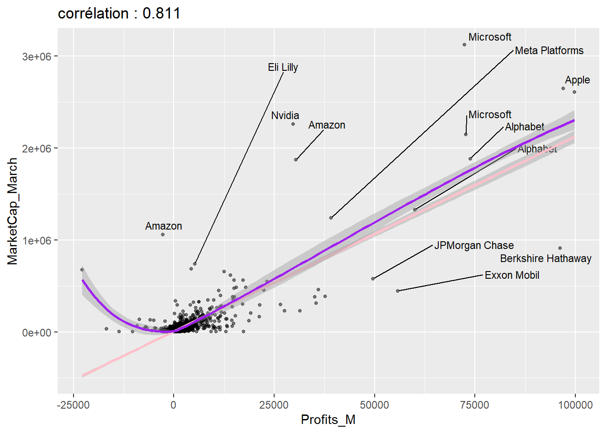

library(tidyverse) #outil de base(dplyr+ggplot+...)
library(rstatix) # pour tout les test en tidy...
library(FactoMineR) #ACP AFC et clustering
library(factoextra)
library(flextable) #pour faire de jolis tableaux
library(scales) #un accessoire de ggplot
library(jtools) # pour de meilleures présentations des résultats des modèles de régressions
library(ggrepel) # un complément de ggplot utile Fortune 1000
Abstract
Ce papier introduit à l’utilisation de r dans l’environnement quarto pour les analyses statistiques fondamentales de la recherche en gestion. Il sert aussi de modèle (template) pour les travaux des étudiants. On examine des distributions, on calcule des moyennes, on les compare et on les teste, on calcule des corrélations. On explore quelques techniques d’analyses de données à la française et on conclue sur un peu d’économétrie
Keywords
r stat, ggplot, tests, anova, regression, clustering, fortune
Introduction
Le cas que nous allons traité est celui des classements Fortune 1000 pour 2024 et 2023. On va se donner un but d’étude : examiner quels facteurs affectent la capitalisation boursière de ces 1000 entreprises.
Il nous faut des outils, les packages, et des données que l’on va mettre en forme.
Les packages
La boite à outils essentielle est tidyverse, de Wickham et al. (2019). On en découvrira l’univers ici, elle nous permettra de manipuler les tableaux de données, et de produire des graphes élégant. Elle s’appuie sur une grammaire des données et une grammaire des graphiques.
Lecture du fichier
Voici la source des données du Fortune 1000 de 2024 et celles de 2023 . On charge les fichiers et on les compile en un seul dataframe, le format ordinaire des données que l’on manipule en r. On en profite pour introduire quelques manipulations de données avec dplyr, un des packages clé de la suite tidyverse.
df1 <- read_csv("fortune1000_2024.csv")|>
mutate(Year="2024") |>
select(-Worlds_Most_Admired_Companies)%>%
rename(MarketCap_March=MarketCap_March28_M,
Best_Companies=Best_Companies_to_Work_For)
df2 <- read_csv("fortune1000_2023.csv")|>
mutate(Year="2023")%>%
rename(MarketCap_March=MarketCap_March31_M)
df_tot<- rbind(df1,df2) #le fichier superpose l'ensemble des observationsUne autre stratégie pourrait être de s’intéresser aux entreprises du classement 2024, mais en les enrichissant des données de 2023 ( si elle étaient déjà dans le classements. On réalise une jointure à gauche (les données de 2024 sont mises à jour avec les données 2023). On utilise dplyrpour effectuer l’opération. Pour les jointures on consultera ce document.
#ici on met à jour les données de 2024 avec celles de 2023
df_2024 <- df1 %>%
left_join(df2,
by = "Company",
suffix = c(".23", ".24"))
foo<-df_2024%>%
select(Rank.24,Company, Rank.23,MarketCap_Updated_M.24, Number_of_employees.24, Revenues_M.24)%>%
filter(Rank.24<21)%>%
arrange(Rank.24)%>%
mutate(cap_per_employee=MarketCap_Updated_M.24/Number_of_employees.24)
#ici on utilise flextable pour faire de jolis tableaux
ft <- flextable(foo)
ft <- theme_vanilla(ft)
ft <- add_footer_lines(ft, "")
ft <- color(ft, part = "footer", color = "#666666")
ft <- set_caption(ft, caption = "Les 20 premiers du Fortune1000 2024")
ftRank.24 | Company | Rank.23 | MarketCap_Updated_M.24 | Number_of_employees.24 | Revenues_M.24 | cap_per_employee |
|---|---|---|---|---|---|---|
1 | Walmart | 1 | 416,986 | 2,100,000 | 611,289 | 0.1985648 |
2 | Amazon | 2 | 1,370,373 | 1,541,000 | 513,983 | 0.8892751 |
3 | Exxon Mobil | 7 | 409,878 | 62,000 | 413,680 | 6.6109355 |
4 | Apple | 3 | 3,051,211 | 164,000 | 394,328 | 18.6049451 |
5 | UnitedHealth Group | 4 | 450,694 | 400,000 | 324,162 | 1.1267350 |
6 | CVS Health | 6 | 91,242 | 259,500 | 322,467 | 0.3516069 |
7 | Berkshire Hathaway | 5 | 752,829 | 383,000 | 302,089 | 1.9656110 |
8 | Alphabet | 8 | 1,585,270 | 190,234 | 282,836 | 8.3332632 |
9 | McKesson | 9 | 55,787 | 66,500 | 263,966 | 0.8389023 |
10 | Chevron | 15 | 290,714 | 43,846 | 246,252 | 6.6303426 |
12 | Costco Wholesale | 11 | 245,043 | 304,000 | 226,954 | 0.8060625 |
13 | Microsoft | 13 | 2,570,671 | 221,000 | 198,270 | 11.6319955 |
14 | Cardinal Health | 14 | 23,797 | 46,035 | 181,364 | 0.5169328 |
15 | Cigna | 16 | 83,187 | 70,231 | 180,516 | 1.1844769 |
16 | Marathon Petroleum | 24 | 50,121 | 17,800 | 180,012 | 2.8157865 |
17 | Phillips 66 | 26 | 45,649 | 13,000 | 175,702 | 3.5114615 |
18 | Valero Energy | 29 | 41,108 | 9,743 | 171,189 | 4.2192343 |
19 | Ford Motor | 17 | 56,371 | 173,000 | 158,057 | 0.3258439 |
20 | Home Depot | 23 | 317,749 | 471,600 | 157,403 | 0.6737680 |
Analyse univariée
Une variable quantitative
On étudie la capitalisation des entreprises en 2024. Examinons les statistiques essentielles : les centralités et les dispersions.
mean<-round(mean(df1$MarketCap_March, na.rm=TRUE)/1000,1)
median<-round(median(df1$MarketCap_March, na.rm=TRUE)/1000,1)On obtient donc :
- capitalisation moyenne : 50.8 milliards de $
- capitalisation médiane: 12.5 milliards de $
- écart type :
La distribution peut être représentée par un simple histogramme.
ggplot(df1, aes(x=MarketCap_March ))+
geom_histogram()
Avec quelques améliorations on obtient ceci:
ggplot(df1, aes(x=MarketCap_March/1000 ))+ #les données sont en millions , on les transforme en milliards de$
geom_histogram(fill="pink2", alpha=.5)+
labs(title="Distribution du chiffre d'affaires des 1000 de Fortune (2024)",
y = "Fréquence",
x="Chiffre d'affaires (en milliards de $)")+
theme_minimal()+
scale_x_continuous(trans='log10', labels = scales::label_comma())Analyser la distribution d’une variable qualitative
On commence à compter le nombre d’occurrences par modalité. On analyse la variable secteur, on veut connaitre la fréquences des 1000 parmi les secteurs d’activités.
sector<- table(df1$Sector) |> #c'est une fonction de base de r
as.data.frame() |> # le résultat de table est un vecteur, un data frame est un format plus utile
arrange(desc(Freq))
ft<-flextable(sector)
ftVar1 | Freq |
|---|---|
Financials | 163 |
Technology | 115 |
Energy | 107 |
Health Care | 80 |
Retailing | 72 |
Business Services | 59 |
Industrials | 48 |
Materials | 47 |
Transportation | 39 |
Food, Beverages & Tobacco | 35 |
Engineering & Construction | 31 |
Wholesalers | 30 |
Hotels, Restaurants & Leisure | 29 |
Chemicals | 26 |
Media | 26 |
Motor Vehicles & Parts | 21 |
Household Products | 20 |
Aerospace & Defense | 19 |
Apparel | 15 |
Food & Drug Stores | 9 |
Telecommunications | 9 |
Un diagramme en barre
ggplot(df1, aes(x=Sector, group= Year))+
geom_bar(alpha=.5, fill="pink2")+
coord_flip()+
theme_minimal()
en mieux
foo<-df1 %>%
group_by(Sector)|>
summarize(n=n())
ggplot(foo, aes(x=reorder(Sector,n), y=n))+
geom_bar(stat="identity",alpha=.5, fill="pink2")+
coord_flip()+
theme_minimal()Comparons les moyennes
On va comparer les capitalisations médianes par secteur et par année.
foo<- df_tot |>
group_by(Sector, Year)%>%
summarise(n=n(),
median=median(MarketCap_Updated_M, na.rm=TRUE) )
ggplot(foo, aes(x=reorder(Sector,median), y=median, group=Year))+geom_line(aes(color=Year))+ coord_flip()Un test d’analyse de variance serait bienvenu. Ses résultats sont clairs : si on peut rejeter avec certitude l’hypothèse de moyennes égales entre tous les secteurs, et donc accepter que certains ont des moyenne plus fortes ou plus plaibles que les autres, et qu’il y a donc un effet sectoriel, la différence d’une année à l’autre n’est pas significative. Une p-value de .1724 indique un risque élevé que la réalité soit une absence de différence, c’est une hypothèse qu’on ne peut écarter.En moyenne les capitalisations n’ont pas changé.
fit<-lm(MarketCap_Updated_M~Sector+Year, df_tot)
anova(fit)Analysis of Variance Table
Response: MarketCap_Updated_M
Df Sum Sq Mean Sq F value Pr(>F)
Sector 20 2.9520e+12 1.4760e+11 3.8687 1.715e-08 ***
Year 1 7.1101e+10 7.1101e+10 1.8636 0.1724
Residuals 1906 7.2717e+13 3.8151e+10
---
Signif. codes: 0 '***' 0.001 '**' 0.01 '*' 0.05 '.' 0.1 ' ' 1Corrélation de deux variables quantitatives
La capitalisation est l’actualisation du profit. On s’attend à ce que les deux variables soient fortement corrélées.
foo <- df_tot |>
filter(!is.na(Profits_M) & !is.na(MarketCap_March))
r <-round(cor(foo$Profits_M,foo$MarketCap_March),3)
ggplot(foo, aes(x=Profits_M, y= MarketCap_March))+
geom_point(alpha=.5, size=1)+
geom_text_repel(aes(label=Company), size=3)+
geom_smooth(method="lm", color="pink")+
geom_smooth(method="loess", color="purple")+
labs(title=paste0("corrélation : ", r))
Comparaison plusieurs groupes sur une variable quanti
Comparer 2023 et 2024.
ggplot(df_tot, aes(x=MarketCap_March, group=Year ))+
geom_density(aes(color=Year))+
scale_x_log10()test en t (student)
stat.test <- df_tot %>%
t_test(MarketCap_March ~ Year) %>%
add_significance()
stat.test# A tibble: 1 × 9
.y. group1 group2 n1 n2 statistic df p p.signif
<chr> <chr> <chr> <int> <int> <dbl> <dbl> <dbl> <chr>
1 MarketCap_March 2023 2024 959 959 -1.46 1744. 0.143 ns Analyser deux variables qualitative
Tableau croisé
Le point de départ est l’analyse du tableau qui croise les deux variables
library(flextable)
Crosstabs<-table(df1$HeadquartersState, df1$Sector)
#flextable(Crosstabs)
# Calculate the chi-square statistic
chi_square_test <- chisq.test(Crosstabs)
# Print the results
print(chi_square_test)
Pearson's Chi-squared test
data: Crosstabs
X-squared = 1800.7, df = 920, p-value < 2.2e-16Analyse des correspondances
CT<-Crosstabs
ca=CA(CT, graph=FALSE)
fviz_ca_biplot(ca, col.row="cos2", labelsize = 2) +
theme_minimal()
ggsave("image/ca.jpg", width = 27, height = 18, units = "cm")Analyse mutivariée descriptive
ACP
Clustering
grouper les Etats en famille similaire par leur profil d’entreprise
Eléments d’économétrie
régression multiple
le modèle formellement s’écrit1 de la manière suivante :
\[ y_i=\beta_0+\sum_{j = 1}^{k} \beta_jx_{i,j} + \epsilon_i \] où \(y_i\) représente la valeur de l’individu \(i\) pour la variable que l’on cherche à expliquer \(y\). Les \(x_{ij}\) représentent les valeurs de la variable \(j\) pour l’individu \(i\) . Les paramètres \(\beta_j\) sont les valeurs que l’on cherche à estimer, en minimisant la comme du carré des erreurs. (principe des moindres carrés ordinaires)[https://fr.wikipedia.org/wiki/R%C3%A9gression_lin%C3%A9aire_multiple]
Un premier example
On s’intéresse à la capitalisation sur le marché en 2024. Il y a de bonnes raisons qu’elle soit liée à celle de l’année précédente. Examinons la relation.
df_2024<-df_2024%>%
filter(!is.na(MarketCap_Updated_M.23), !is.na(MarketCap_Updated_M.24))
r<-round(cor(df_2024$MarketCap_Updated_M.23,df_2024$MarketCap_Updated_M.24),3)
ggplot(df_2024, aes(x=MarketCap_Updated_M.23,MarketCap_Updated_M.24))+
geom_point(alpha=.5, size=.8)+
geom_smooth(method="lm", size=.5)+
labs(title = paste0("corrélation : ", r))
Si la corrélation est forte, il y a cependant un phénomène d’ hétéroscédasticité : la variance n’est pas constante. On peut corriger ceci en transformant nos variables par une fonction logarithme. Le résultat est bien plus régulier !
df_2024<-df_2024%>%
filter(!is.na(MarketCap_Updated_M.23), !is.na(MarketCap_Updated_M.24)) |>
mutate(MarketCap_Updated_M.23_ln=log(MarketCap_Updated_M.23),
MarketCap_Updated_M.24_ln=log(MarketCap_Updated_M.24))
r<-round(cor(df_2024$MarketCap_Updated_M.23_ln,df_2024$MarketCap_Updated_M.24_ln),3)
ggplot(df_2024, aes(x=MarketCap_Updated_M.23_ln,MarketCap_Updated_M.24_ln))+
geom_point(alpha=.5, size=.8)+
geom_smooth(method="lm", size=.5)+
labs(title = paste0("corrélation : ", r))Effectuons la régression.
fit<-lm( MarketCap_Updated_M.24_ln ~ MarketCap_Updated_M.23_ln, df_2024)
summary(fit)
Call:
lm(formula = MarketCap_Updated_M.24_ln ~ MarketCap_Updated_M.23_ln,
data = df_2024)
Residuals:
Min 1Q Median 3Q Max
-2.6424 -0.1912 0.0138 0.2036 5.5678
Coefficients:
Estimate Std. Error t value Pr(>|t|)
(Intercept) 0.608115 0.085391 7.122 2.2e-12 ***
MarketCap_Updated_M.23_ln 0.920884 0.008843 104.134 < 2e-16 ***
---
Signif. codes: 0 '***' 0.001 '**' 0.01 '*' 0.05 '.' 0.1 ' ' 1
Residual standard error: 0.4197 on 888 degrees of freedom
Multiple R-squared: 0.9243, Adjusted R-squared: 0.9242
F-statistic: 1.084e+04 on 1 and 888 DF, p-value: < 2.2e-16Il est temps d’introduire d’autre variables. On va se contenter d’introduire deux variables :
l’accroissement du chiffre d’affaires qui signalent la dynamique de l’entreprise et sa capacité à produire du profit, pour autant que les coût ne croissent en égale proportion.
le secteur d’activité, une variable qualitative, qui sera recodée par hot encoding au regard d’une catégorie de référence.
fit1<-lm( MarketCap_Updated_M.24_ln ~ MarketCap_Updated_M.23_ln+ RevenuePercentChange.24 , df_2024)
fit2<-lm( MarketCap_Updated_M.24_ln ~ MarketCap_Updated_M.23_ln+ RevenuePercentChange.24 + Sector.24, df_2024)
library(jtools)
export_summs(fit, fit1,fit2,
error_pos="right",
number_format = "%.3f")| Model 1 | Model 2 | Model 3 | ||||
|---|---|---|---|---|---|---|
| (Intercept) | 0.608 *** | (0.085) | 0.560 *** | (0.087) | 0.571 *** | (0.136) |
| MarketCap_Updated_M.23_ln | 0.921 *** | (0.009) | 0.924 *** | (0.009) | 0.921 *** | (0.009) |
| RevenuePercentChange.24 | 0.001 ** | (0.000) | 0.001 ** | (0.000) | ||
| Sector.24Apparel | -0.013 | (0.145) | ||||
| Sector.24Business Services | -0.030 | (0.116) | ||||
| Sector.24Chemicals | 0.124 | (0.128) | ||||
| Sector.24Energy | 0.051 | (0.109) | ||||
| Sector.24Engineering & Construction | -0.392 ** | (0.125) | ||||
| Sector.24Financials | -0.045 | (0.107) | ||||
| Sector.24Food & Drug Stores | 0.462 ** | (0.175) | ||||
| Sector.24Food, Beverages & Tobacco | 0.261 * | (0.125) | ||||
| Sector.24Health Care | 0.248 * | (0.111) | ||||
| Sector.24Hotels, Restaurants & Leisure | 0.160 | (0.126) | ||||
| Sector.24Household Products | 0.073 | (0.136) | ||||
| Sector.24Industrials | -0.040 | (0.117) | ||||
| Sector.24Materials | -0.096 | (0.119) | ||||
| Sector.24Media | 0.151 | (0.130) | ||||
| Sector.24Motor Vehicles & Parts | -0.055 | (0.138) | ||||
| Sector.24Retailing | -0.002 | (0.112) | ||||
| Sector.24Technology | -0.024 | (0.107) | ||||
| Sector.24Telecommunications | 0.207 | (0.174) | ||||
| Sector.24Transportation | 0.009 | (0.121) | ||||
| Sector.24Wholesalers | -0.095 | (0.127) | ||||
| N | 890 | 882 | 882 | |||
| R2 | 0.924 | 0.925 | 0.933 | |||
| *** p < 0.001; ** p < 0.01; * p < 0.05. | ||||||
Voici la représentation graphique sous forme de tree plot équivalente.
plot_summs(fit,fit1, fit2)On peut souhaiter mieux se représenter les effets de chacune des variables. Les diagramme d’effets marginaux sont utiles à cette fin. Ils représentent l’effet moyen des modalités d’une variable, sous contrôle des autres variables.On découvre que l’effet de l’accroissement de chiffre d’affaire a un effet sensible quand les ventes doublent et au-delà. Un effet de fusion ? Quant aux secteurs d’activité le secteur du BTP est associé aux plus faibles capitalisation, la santé et la distribution étant les principaux bénéficiaires.
effect_plot(fit2, pred = RevenuePercentChange.24, interval = TRUE, plot.points = FALSE)+
scale_x_log10()
effect_plot(fit2, pred = Sector.24, interval = TRUE, plot.points = FALSE)+coord_flip()les interactions
Dans un projet de recherche il arrive souvent que l’on cherche à tester la relation entre une variable Y et une variable explicative X mais que l’on soupçonne que celle-ci varie selon les situations Z. Prenons par exemple cette vieille hypothèse de la contingence et l’effet de l’incertitude de l’environnement sur la performance organisationnelle. Cet effet peut varier selon le type d’organisations. Certaines sont plutôt mécanistes (le modèle bureaucratique et hiérarchique), d’autres plutôt organiques ( modèle d’autonomie et d’interaction). Les premières sont efficaces quand l’incertitude de l’environnement est faible et que la plannification est le moyen le plus rationnel d’opérer. Les secondes le sont au contraire quand l’environnement est volatil, incertain, turbulent.
On peut représenter ces relations dans le diagramme suivant :
On peut aussi les formaliser :
\[Perf= a_0+a_1Incertitude\]
et, avec \(Org \in [0,1]\) : \[a_1=b_0+b_10rg\]
En remplaçant et en arrangeant on obtient :
\[Perf= a_0+b_0Org+ b_1OrgIncertitude\]
Le terme multiplicatif qui apparaît est est le terme d’interaction. Dans l’exemple simplifié puisque la variable organisation prend pour valeur 1 ou 0, selon qu’elle soit mécaniste où organique.
Le résultat peut surprendre, mais en regardant de plus prêt, la causalité est inversée ! Les entreprises dirigées par des femmes et à fortes croissance ont de faibles capitalisation.
fit1<-lm( MarketCap_Updated_M.24_ln ~ RevenuePercentChange.24*FemaleCEO.24 + Sector.24 +MarketCap_Updated_M.23_ln, df_2024)
fit2<-lm( MarketCap_Updated_M.24_ln ~ RevenuePercentChange.24+FemaleCEO.24 + Sector.24 +MarketCap_Updated_M.23_ln, df_2024)
library(interactions)
interact_plot(fit1, pred = RevenuePercentChange.24, modx = FemaleCEO.24, interval = TRUE)+scale_x_log10()export_summs(fit2,fit1,
error_pos="right",
coefs = c("croissance du CA" = "RevenuePercentChange.24",
"Female"="FemaleCEO.24yes",
"Interaction"="RevenuePercentChange.24:FemaleCEO.24yes",
"Capitalisation n-1" = "MarketCap_Updated_M.23_ln"),
number_format = "%.3f")| Model 1 | Model 2 | |||
|---|---|---|---|---|
| croissance du CA | 0.001 ** | (0.000) | 0.001 ** | (0.000) |
| Female | -0.014 | (0.049) | 0.072 | (0.060) |
| Interaction | -0.006 * | (0.002) | ||
| Capitalisation n-1 | 0.921 *** | (0.009) | 0.920 *** | (0.009) |
| N | 882 | 882 | ||
| R2 | 0.933 | 0.933 | ||
| *** p < 0.001; ** p < 0.01; * p < 0.05. | ||||
foo<-df_2024 %>%
filter(FemaleCEO.24=="yes" & RevenuePercentChange.24 >50)%>%
select(Company,Sector.24,RevenuePercentChange.24,FemaleCEO.24, MarketCap_Updated_M.24)
ft<-flextable(foo)
ftCompany | Sector.24 | RevenuePercentChange.24 | FemaleCEO.24 | MarketCap_Updated_M.24 |
|---|---|---|---|---|
Opendoor Technologies | Technology | 94.1 | yes | 1,131 |
MillerKnoll | Household Products | 60.1 | yes | 1,546 |
Greenbrier | Transportation | 70.4 | yes | 1,055 |
Jackson Financial | Financials | 57.4 | yes | 3,078 |
modèles à décomposition d’erreurs
C’est le cas des panels par exemple: chaque individu est observé sur la variable \(j\) dans le pays \(g\) et au moment \(t\) . On parle aussi de modèles hiérarchiques, de modèles Multi-niveaux, de modèle à effets mixtes ou de modèle à décomposition d’erreur.
Dans ce cadre d’analyse on distinguera les effets fixes (ceux des \(x_{j}\)) et les effets aléatoires \(\mu_g\) qui représente l’effet de la variable groupe.
\[ y_{i,g}=\beta_0+\sum_{j = 1}^{k} \beta_jx_{ijg} +\mu_g+\epsilon_{ig} \]
Sachant que les entreprises sont insérés dans un champs économique (le secteur ou l’Etat), on peut capturer l’effet de cette variable de second niveau. pour la mise en oeuvre on utilise le package lme4.
Le terme entre parenthèse représente l’effet aléatoire. Le premier modèle prend en compte l’Etat où se trouve le siège (un effet d’agglomération), le second modèle le secteur (l’effet de champs), le troisième prend en compte ces deux facteurs de manière additive.
Les paramètres des effets fixes restent stables, la prise en compte de ces deux facteurs pèsent 1% de la variance. Finalement assez peu
library(lme4)
model1 <- lmer(MarketCap_Updated_M.24_ln ~ RevenuePercentChange.24*FemaleCEO.24 +MarketCap_Updated_M.23_ln+ (1 | HeadquartersState.24), df_2024 )
model2 <- lmer(MarketCap_Updated_M.24_ln ~ RevenuePercentChange.24*FemaleCEO.24 +MarketCap_Updated_M.23_ln+ (1 | Sector.24), df_2024 )
model3 <- lmer(MarketCap_Updated_M.24_ln ~ RevenuePercentChange.24*FemaleCEO.24 +MarketCap_Updated_M.23_ln+ (1 | Sector.24+HeadquartersState.24), df_2024 )
export_summs(model1,model2,model3,
error_pos="right",
coefs = c("croissance du CA" = "RevenuePercentChange.24",
"Female"="FemaleCEO.24yes",
"Interaction"="RevenuePercentChange.24:FemaleCEO.24yes",
"Capit. t-1" = "MarketCap_Updated_M.23_ln"),
model.names = c("MLM state","MLM Sector","MLM Sector+State"),
number_format = "%.3f")| MLM state | MLM Sector | MLM Sector+State | ||||
|---|---|---|---|---|---|---|
| croissance du CA | 0.001 ** | (0.000) | 0.001 ** | (0.000) | 0.001 ** | (0.000) |
| Female | 0.103 | (0.061) | 0.083 | (0.059) | 0.086 | (0.059) |
| Interaction | -0.007 * | (0.003) | -0.007 ** | (0.002) | -0.006 ** | (0.002) |
| Capit. t-1 | 0.925 *** | (0.009) | 0.920 *** | (0.009) | 0.921 *** | (0.009) |
| N | 882 | 882 | 882 | |||
| N (HeadquartersState.24) | 44 | 44.000 | ||||
| AIC | 1007.489 | 971.350 | 967.940 | |||
| BIC | 1040.964 | 1004.825 | 1006.198 | |||
| R2 (fixed) | 0.925 | 0.923 | 0.923 | |||
| R2 (total) | 0.927 | 0.931 | 0.933 | |||
| N (Sector.24) | 21 | 21.000 | ||||
| *** p < 0.001; ** p < 0.01; * p < 0.05. | ||||||
Conclusion
D’autres spécifications de modèles de régression ont été proposées en fonction de la nature de la variables qu’on veut étudier
- variable binaire : modèle logit
- variable de dénombrement : le modèle de Poisson est fondamental
- variable de durée : modèle de Cox est devenu un standard
Mais le grand progrès de l’économétrie, ce sont les modèles causaux et l’idée de contre factuel.
- modèles de discontinuité
- modèles DiD.
Références
Wickham, Hadley, Mara Averick, Jennifer Bryan, Winston Chang, Lucy McGowan, Romain François, Garrett Grolemund, et al. 2019. “Welcome to the Tidyverse.” Journal of Open Source Software 4 (43): 1686. https://doi.org/10.21105/joss.01686.